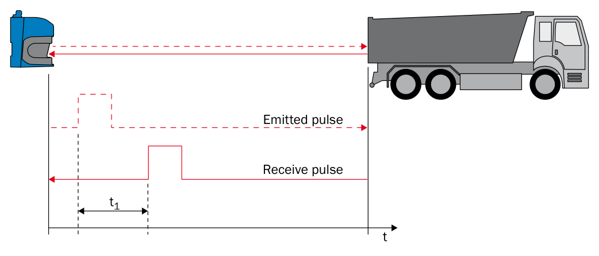
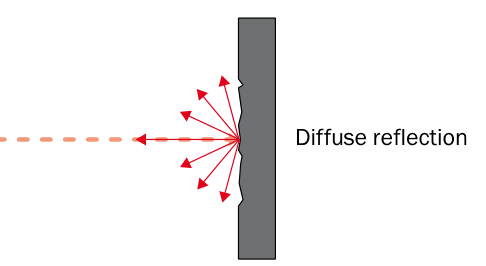
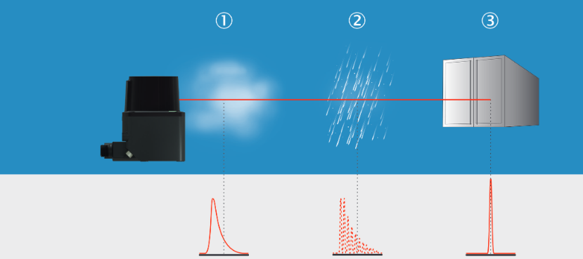
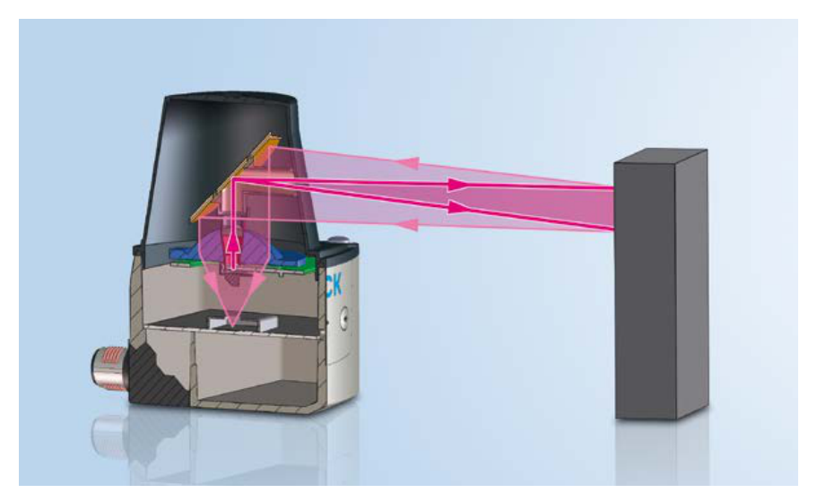
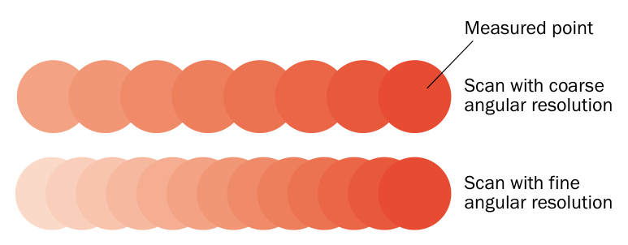
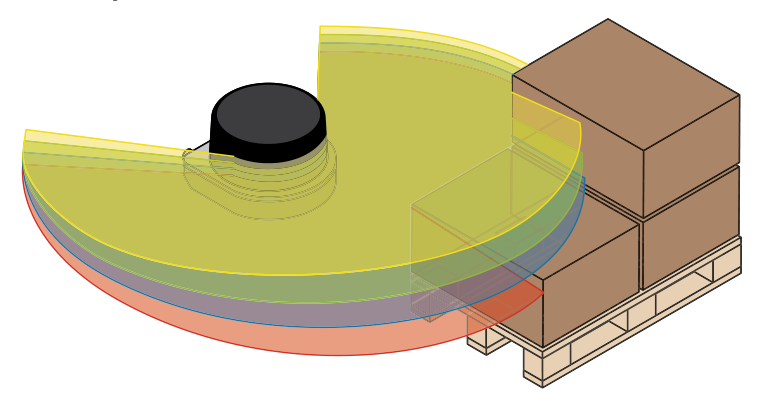
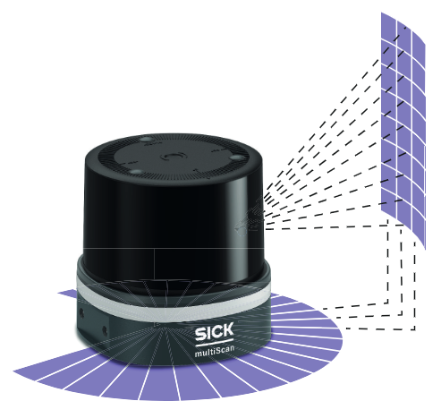

LiDAR Basics¶
LiDAR stands for light detection and ranging. A LiDAR sensor sends out laser pulses and evaluates the light that comes back from objects. Every measurement produces a distance and the direction the beam pointed in, so the sensor maps its surroundings without touching anything.
The sensor supplies its own light. It therefore works in daylight, at night, indoors, and in tunnels. This page explains the measuring principle and the terms used throughout this guide. Short definitions are collected in the glossary.
Measuring Distance with Light¶

The sensor measures the time between the emitted pulse and the received pulse.
A pulse leaves the sender, travels to the object, and part of it returns to the receiver. The sensor measures the elapsed time. Light travels at a known speed and covers the distance twice, so the distance is half the time-of-flight multiplied by the speed of light.
The beam follows a straight line, so the sensor reports the shortest distance to the first object in its path. Two pulse time-of-flight implementations are relevant here:
Measuring Distance with Light: process, how it works, and strength.
| Process | How it works | Strength |
|---|---|---|
| Single-pulse time-of-flight | Determines a distance from the travel time of one pulse and its echo. | Direct measurement with a short response time. |
| HDDM+ | Combines the returns from many pulses to calculate one distance value. | Reliable readings on dark objects and in poor visibility. |
Both implementations determine distance from the travel time of light. HDDM+ uses the additional measurements to make the result more robust.
How Much Light Comes Back¶

A rough surface scatters the beam, so only a fraction of the light returns to the receiver.
Most surfaces scatter light in many directions, and only a small part of it reaches the receiver. The share of light that an object sends back is its remission factor. It determines how far away that object can still be measured.
How Much Light Comes Back: surface and approximate remission.
| Surface | Approximate remission |
|---|---|
| Coal | 5 % |
| Matte black shoe leather | 10 % |
| White drywall | 90 % |
| Reflective tape | Several 1,000 % |
| Retroreflector | Up to 10,000 % |
Scanning ranges are therefore always stated together with a remission factor, for example 30 m at 10 % remission. A dark object is detected at a shorter distance than a bright one, and retroreflectors return far more light than a diffuse surface.
The beam needs a clear line of sight. A LiDAR sensor does not see around corners and generally cannot measure through glass or film packaging. Such surfaces create reflections of their own and disturb the measured value.
One Beam, Several Echoes¶

Fog, rain, and the solid object each produce a different return signal.
A laser pulse is not infinitely thin. When the beam hits a raindrop, a dust cloud, or the edge of an object, part of the light is reflected early while the rest travels on to the surface behind. Every reflection that reaches the receiver is an echo, and the sensor can report more than one echo per beam.
Echoes are what make LiDAR usable outdoors, because reflections from rain, snow, dust, and hail can be separated from the real target. The echo filter selects which echoes the sensor outputs, for example the first echo, the last echo, or all of them.
One, Two, and Three Dimensions¶
One, Two, and Three Dimensions: variant, what it measures, and typical sensor.
| Variant | What it measures | Typical sensor |
|---|---|---|
| 1D | Distance along a single fixed beam. | Distance sensor aimed at a target or a reflector. |
| 2D | Distance and angle within one plane. | 2D LiDAR sensor, also called a laser scanner. |
| 3D | Distance, horizontal angle, and vertical angle. | Multi-layer sensor, or a 2D sensor that is moved. |
The horizontal angle of a beam is called the azimuth and the vertical angle the elevation.
How a 2D Sensor Scans a Plane¶

A rotating mirror sweeps the beam of one sender and receiver across a whole plane.
A 2D sensor deflects its beam with a rotating mirror, so a single sender and receiver cover an entire plane. The sensor fires its pulses in step with the mirror rotation. This links three values: the pulse rate of the laser, the rotation speed of the motor, and the angular resolution.
Angular resolution is the angle between two neighboring measured points.

A fine angular resolution places the measured points closer together.
A fine angular resolution puts the measured points close together and covers the scan plane without gaps, so even small objects are detected. A coarse angular resolution produces fewer points per scan. The beam also widens with distance, so the points move further apart the further away the object is. A scan that covers an area without gaps nearby can leave gaps at long range.
One full scan of the plane is called a frame. The sensors in this guide output each frame in segments, and filters can reduce the data before it is sent. See Data Streaming and Filter Details.
From Scan Planes to Point Clouds¶

A multi-layer sensor scans several planes at once, each tilted by a fixed angle.
A 3D sensor adds the vertical angle. Multi-layer sensors contain several sender and receiver modules aimed at different vertical angles, so one rotation produces several scan planes, called layers, at the same time. Distance, azimuth, and elevation together describe every measured point as an XYZ coordinate. A set of such points is a point cloud.

Multiple scan planes provide the spatial coverage needed to build a 3D view.
A 2D sensor can also produce 3D data when it is moved, for example on a rotating axis, a linear axis, or a vehicle. The scans carry time stamps, and the known movement supplies the missing third coordinate. See 3D With 2D LiDARs.